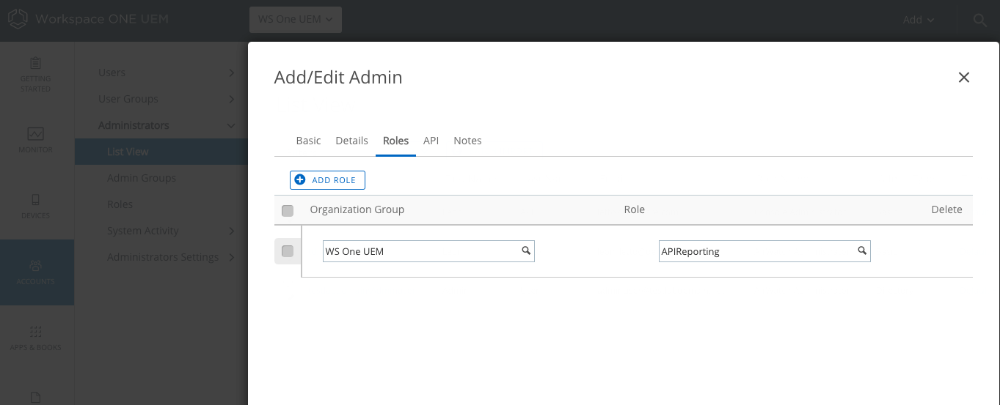

Workspace ONE Excel Add-In (Beta)
Usage
The Workspace ONE Excel Add-In takes the complication out of accessing your Workspace ONE UEM API's and importing that data into Excel. This is a live sheet which you can update at any time and even copy into a different Office Application (eg. Word or Powerpoint) and maintain the connection to the live data your environment.
Below you will find the step by step instructions to connect this tool to your Workspace ONE UEM API server.
-
Sign in to Workspace ONE. Then click on Groups and Settings, then All Settings

-
In the Settings pane, select System, then Advanced, then API, then REST API

-
One the REST API page, you will see the API keys which have been created. You have a choice of creating a new API key to use for this tool or using an existing one.
I would strongly suggest creating a new admin API key to use for this tool.

-
You should create an admin account which you will use with the tool as well. This will alow you to create a role which has read-only abilities on the API.

-
Next you should create an admin Role which has read-only abilities on the API. Click Accounts->Administrators->Roles.

-
Add a Role and give it Read Only abilities on the API.

-
Finally go back to your ApiReporting Admin account and assign it to only have the new APIReporting Role.
 -
Switch to Excel, click on the Workspace ONE Add-In icon to open the add-in.

-
Then click Login.

-
Next you will enter the following and click Login:
- Username: Your API admin username
- Password: Your API admin password
- Apikey: The apikey you generated to allow read-only access to your api
- Domain: The domain name of the environment you manage = eg. asXX.awmdm.com
Usually the name is asxxx since that is the API server prefix

-
Once you have logged in, There are multiple tabs to choose from where you can retrieve data from your API.